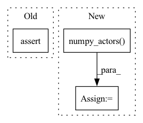

Pattern ID :33898
Before Change
optimization_direction = np.dot(updater.normal_dist.T, scaled_rewards)
updater(learning_rate=0.01, optimization_direction=optimization_direction)
new_population = updater.population
assert new_population.shape == (POPULATION_SIZE, 2)
np.testing.assert_allclose(np.std(new_population, axis=0), np.ones(2), rtol=0.1)
np.testing.assert_array_less(updater.mean, np.array([10, 10]))
After Change
// TEST CALL
old_model = copy.deepcopy(model_continuous)
old_population = model_continuous.numpy_actors()
action = model_continuous(np.zeros(POPULATION_SIZE))
_, rewards, _, _ = env_continuous.step(action)
scaled_rewards = (rewards - np.mean(rewards)) / np.std(rewards)
optimization_direction = np.dot(updater.normal_dist.T, scaled_rewards)In pattern: SUPERPATTERN
Frequency: 3
Non-data size: 3
Instances Fragment ID: 97146462
Project Name: londonnode/pearl
Commit Name: ef20e6cb8e342b9b554f97de99d194649a385553
Time: 2022-01-06
Author: rohan.tangri@gmail.com
File Name: tests/test_updaters.py
M Class Name: AnonimousClass
N Class Name: AnonimousClass
M Method Name: test_evolutionary_updater_continuous(0)
N Method Name: test_evolutionary_updater_continuous(0)
M Parent Class:
N Parent Class:
M File Name: tests/test_updaters.py
N File Name: tests/test_updaters.py
M Start Line: 377
M End Line: 395
N Start Line: 376
N End Line: 414
Before Change
:param elitism: fraction of the population to keep as elite
:return: the updater log
assert (
self.population is not None
), "Before calling the updater you must call the population initializer `self.initialize_population()`"
After Change
// Store elite population
if self.population_type == "actor":
old_population = self.model.numpy_actors()
elif self.population_type == "critic":
old_population = self.model.numpy_critics()
num_elite = int(self.population_size * elitism)
elite_indices = np.argpartition(rewards, -num_elite)[-num_elite:] Fragment ID: 97146461
Project Name: londonnode/pearl
Commit Name: ef20e6cb8e342b9b554f97de99d194649a385553
Time: 2022-01-06
Author: rohan.tangri@gmail.com
File Name: anvilrl/updaters/evolution.py
M Class Name: GeneticUpdater
N Class Name: GeneticUpdater
M Method Name: __call__(9)
N Method Name: __call__(9)
M Parent Class: BaseEvolutionUpdater
N Parent Class: BaseEvolutionUpdater
M File Name: anvilrl/updaters/evolution.py
N File Name: anvilrl/updaters/evolution.py
M Start Line: 214
M End Line: 235
N Start Line: 145
N End Line: 163
Before Change
updater(learning_rate=1e-5, optimization_direction=optimization_direction)
new_population = updater.population
assert np.issubdtype(new_population.dtype, np.integer)
assert new_population.shape == (POPULATION_SIZE, 1)
np.testing.assert_allclose(np.std(new_population, axis=0), np.ones(1), rtol=0.1)
np.testing.assert_array_less(updater.mean, np.array([5]))
After Change
scaled_rewards = (rewards - np.mean(rewards)) / np.std(rewards)
optimization_direction = np.dot(updater.normal_dist.T, scaled_rewards)
log = updater(learning_rate=1e-5, optimization_direction=optimization_direction)
new_population = model_discrete.numpy_actors()
assert log.divergence > 0
// make sure the nerual network has been updated by the updater
assert model_discrete != old_model
assert np.not_equal(old_population, new_population).any() Fragment ID: 97146466
Project Name: londonnode/pearl
Commit Name: ef20e6cb8e342b9b554f97de99d194649a385553
Time: 2022-01-06
Author: rohan.tangri@gmail.com
File Name: tests/test_updaters.py
M Class Name: AnonimousClass
N Class Name: AnonimousClass
M Method Name: test_evolutionary_updater_discrete(0)
N Method Name: test_evolutionary_updater_discrete(0)
M Parent Class:
N Parent Class:
M File Name: tests/test_updaters.py
N File Name: tests/test_updaters.py
M Start Line: 399
M End Line: 419
N Start Line: 419
N End Line: 458